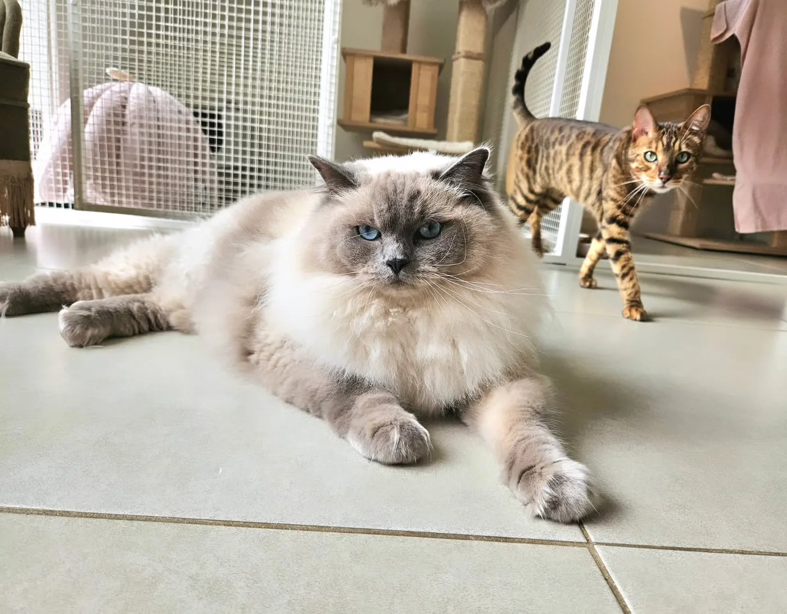
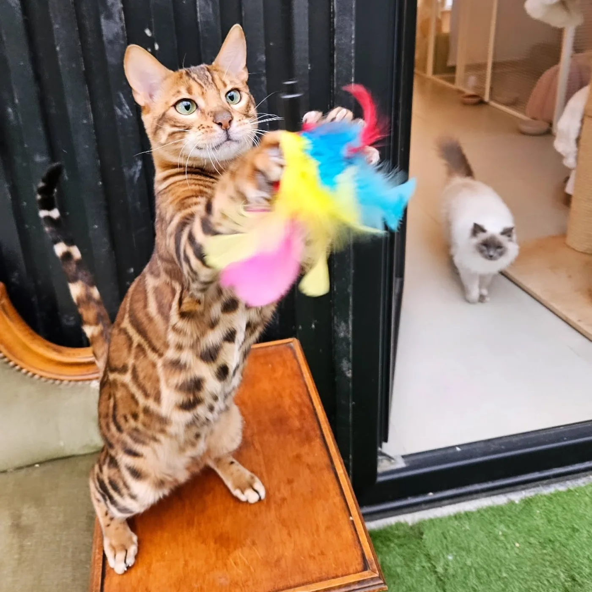
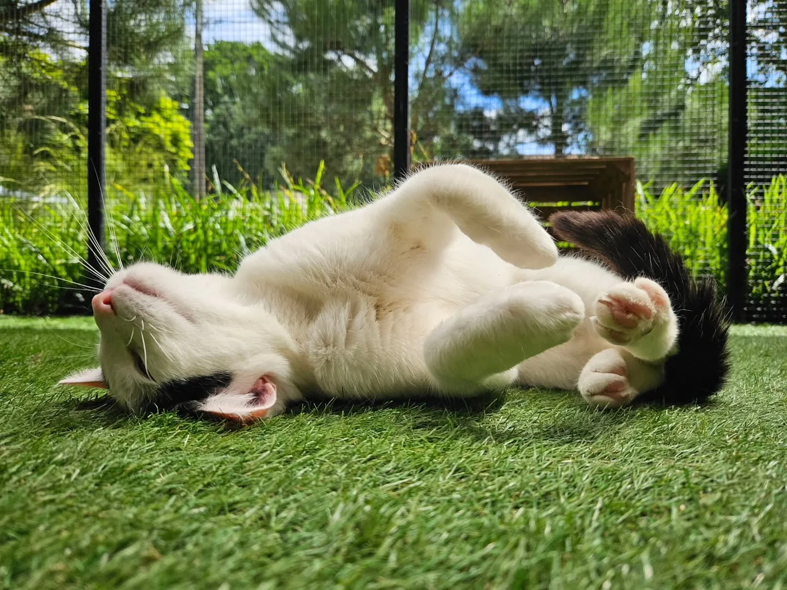

01
Rustig toekomen
We spreken vooraf een uur af en houden het afscheid kort. Met feromonen in het verblijf voelt je kat zich sneller thuis.

Bij ons logeert je kat in een echt huis, met een grote buitenren en heel veel knuffels. Jij krijgt elke dag foto's via WhatsApp. Zo geniet iedereen van de vakantie.
Sommige katten rennen meteen rond, andere kruipen eerst een poosje weg. Bij ons mag dat allemaal.
We spreken vooraf een uur af en houden het afscheid kort. Met feromonen in het verblijf voelt je kat zich sneller thuis.
Elk verblijf heeft ligplekken op drie hoogtes en een verstopplek. Klaar om te verkennen? Dan is het hele hotel van haar.
's Ochtends en 's avonds vers eten, je eigen voeding of medicatie zoals afgesproken. De kattenbak kuisen we twee keer per dag.
Via WhatsApp krijg jij foto's en soms een filmpje. Zo zie je met eigen ogen hoe goed ze het heeft.

Ons kattenhotel zit in ons eigen huis. Yoline is professionele dierenoppasser en volgde naast haar diploma dierenverzorging ook opleidingen die helemaal over katten gaan. Wil je liever dat je kat thuisblijft? Dan komen we bij jou langs.
Een kleine greep uit de foto's die de baasjes onderweg kregen.




Op Instagram posten we geregeld wie er op vakantie is. Spoiler: ze zien er allemaal heel tevreden uit.
@dekatmadamhaacht"Max had nog nooit in contact gestaan met andere katten en was nog nooit op hotel geweest, dus we waren aanvankelijk een beetje ongerust. Maar die zorgen bleken helemaal onnodig! Hij is na zijn tiendaags verblijf helemaal ontspannen en blij terug thuisgekomen."
"Yoline is een super betrokken en lieve Katmadam :-) Ik zou mijn kat bij niemand anders zo vertrouwen als bij haar. De katten mogen overdag vrij rondlopen in een huiselijke sfeer en kunnen bij goed weer in de grote buitenren vertoeven."
"Dankjewel Yoline en Marvin dat onze Yuzu het kot bij jullie op stelten mocht zetten 😃! Op de foto's die dagelijks werden verstuurd, had onze jonge kat het heel hard naar haar zin."
Je kat voor het eerst ergens laten logeren voelt spannend. Heel normaal! Hier vind je de antwoorden die we het vaakst geven.
Zomer al gepland? In de zomer zitten we snel vol, en de boekingen voor 2027 lopen al binnen.
Dat kan altijd. Stuur ons een berichtje en we spreken een moment af om samen rond te kijken.
Wanneer je weg bent, hoeveel katten er komen logeren en hoe ze heten. En verder alles over voeding, gewoontes en vaccinaties. Hoe meer we weten, hoe beter we haar verwennen.
Zeker. Breng gerust je eigen voeding mee, en medicatie geven we zoals afgesproken.
Ja, dan komen wij bij jou thuis langs als kattenoppas. Vraag gerust naar een huisbezoek.
Het hotel is verbonden met een brandcentrale en staat dag en nacht onder cameratoezicht. Daarnaast komt dierenartsenpraktijk Beestenbos elk kwartaal langs voor een inspectie.
Laat ons weten wanneer je weg bent en wie er komt logeren. We antwoorden snel, en dan weet jij meteen of er plek is.

Ik maakte deze demo voor jullie om te tonen wat er kan. Na een kort gesprek maak ik er iets veel persoonlijkers van, helemaal naar jullie wens.
Vrijblijvend. Ik kom langs of we bellen.
Op maat, op jullie eigen domein.
Geen voorschot. Jullie betalen pas als alles klaar is.
Hosting, domeinnaam en kleine wijzigingen, zoals nieuwe openingsuren.
Omdat een voorbeeld meer zegt dan een mail. Zo zien jullie meteen wat er kan, en het kost jullie niets.
Nee. Het gesprek is vrijblijvend. Vinden jullie het niks, dan is het daarmee gedaan.
Na ons gesprek staat jullie site binnen 10 tot 14 dagen online.
Zeker. Jullie domeinnaam kan gewoon blijven, de nieuwe site komt in de plaats van de oude.
Nee, dat doe ik op basis van ons gesprek. Eigen foto's zijn mooi meegenomen, maar niet nodig om te starten.